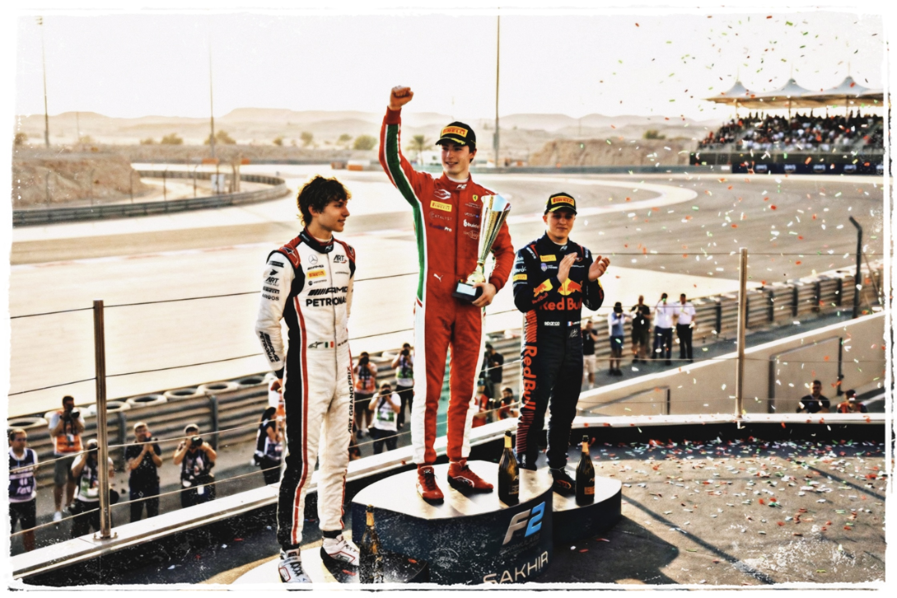
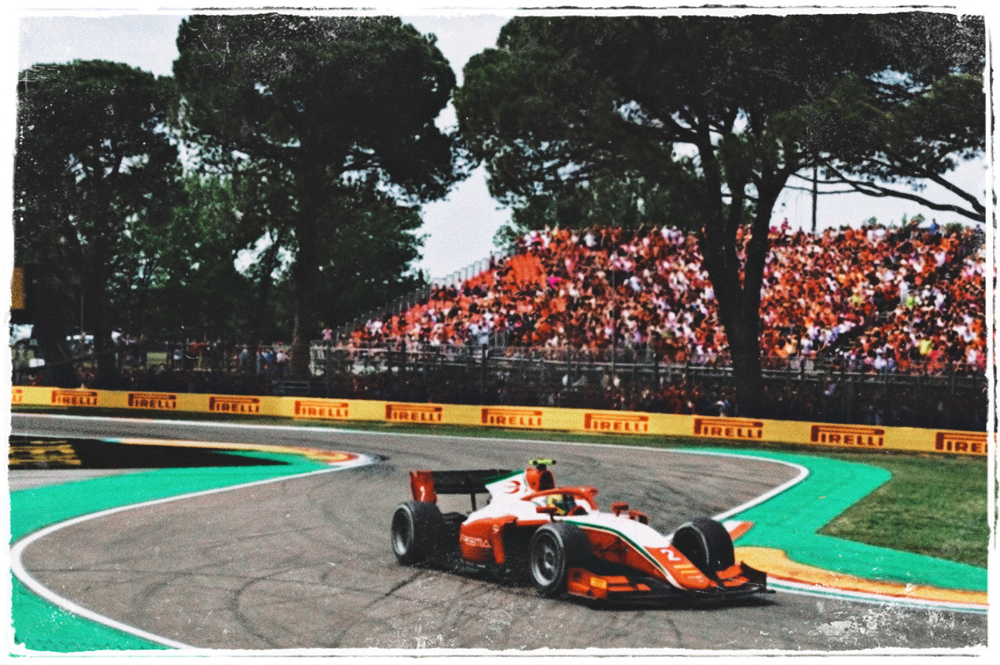
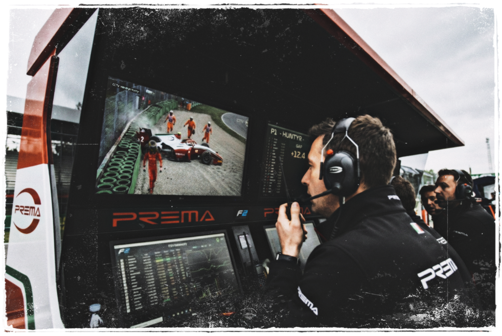

Chapter 3
The Proving Ground
The 2024 Formula 2 season begins
For Hendryx Sébastien Friedrich Huntÿr,
the 2024 Formula 2 season began beneath
expectations long in the makings.
The final step in a path that had carried
him through every category below.
Fourteen rounds.
One championship.
And somewhere beyond it,
the future he had spent years
being told was waiting for him.
For now, there was only one thing
he could do to reach it.
Win.
A dominant debut in Bahrain
It began in Bahrain with a silence
that unnerved the paddock.
The desert didn't care about hype or heritage.
It cared about heat, tyre wear, and whether you could
brake at the 100-meter board without flinching
when the car still wanted to kill you.
The first F2 weekend was supposed to be a test.
It became the first unmistakable
sign of what was coming.
In the Sprint, he was leading by Turn 4.
There was no drama, no elbows-out desperation,
but just a series of precise decisions.
Braking two metres later here,
opening the steering one degree earlier there,
choosing the outside line where everyone
expected the inside.
"Good job, Hendryx. P1, mate, P1. Nice and controlled."
"Copy that. Thank you guys..." Hendryx replied.
He didn't say it was easy. He didn't have to.
The Feature race was worse,
much worse... for everyone else.
While the midfield was in a frantic mess
of locked brakes and radio screams,
Hendryx was the phantom of the desert.
From Pole position, he built a gap
that didn't make any sense.
Two seconds, four, eight, ten, twenty.
The timing screen turned into a crime scene.
Alex Jacques started throwing around words like
"dominant," "frightening," and "inevitable."
Rookies aren't supposed to do the double on debut,
and they certainly aren't supposed to win
the Feature by twenty seconds...
The Italian newsfeeds had already moved on
to the important part:

"Questo è un futuro campione Ferrari..."
This... is a future Ferrari Champion.
In the debrief, his race engineer showed him the lap chart.
"Do you realise" slowly tracing a finger along the lines;
"you did ten laps within two tenths of each other?"
Hendryx shrugged lightly.
"I knew the grip was there."
He knew he was good.
But he had no idea yet about
how good that looked from the outside.
Jeddah and Melbourne
Into the Jeddah Corniche, the paddock
had moved from curiosity to caution.
Street circuits were supposed to humble rookies.
The walls were too close, the speeds too high,
the margin for error measured in
millimetres and medical reports.
After a technicality put him in P10 for the Sprint,
he carved through the walls of the world's fastest
street circuit like a scalpel, merely reorganising the field.
P9. P7. P4. P2. Each move done with a detached precision
of someone aligning their tools on a workbench.
Second in the Sprint.
Victory in the Feature.
Double podium. Maximum damage.
On the world feed, Alex Brundle spent
most of the session trying to find a flaw in the telemetry,
eventually settling on a recurring verdict:
"A complete driver"
"No visible weakness"
"Born for this"
The Ferrari Academy staff took notes.
The other teams took screenshots.
By Melbourne, the hype was a fever...
He took Pole by eight-tenths of a second,
a gap unheard of in a spec-series
where everyone has the exact same engines.
Jeremy Clarkson didn't mince words on social media:
"I'm slightly struggling with the new F1 rules,
but not with the lad in F2.
He's playing a very different sport, isn't he?"
The quote was everywhere by the end of the day.
Hendryx wasn't just winning, he was making
the rest of The Golden Generation look like amateurs.
The turning point at Imola
Then came Imola.
The old circuit waited beneath an Italian spring,
narrow and unforgiving between the trees.
Red, white and green climbed the grandstands.
Scarlet gathered behind the fences.
For the first time that season,
Hendryx was racing on soil
that already knew his name.
The weekend had started like a fairy tale.
Pole on Friday.
Victory on Saturday.
And by Sunday, the PREMA seemed to answer
every question before Hendryx could ask it.
The Tifosi were already chanting for him
before he even climbed into the car.
Even for a junior category, they showed up in droves.
Scarlet jackets, old flags, banners with his name
spelled wrong but screamed right.
"IL NOSTRO FUTURO," that he was their bright future.
On Sunday, the sky hung low and heavy,
the track somewhere between dry and treacherous.
Perfect conditions for someone
who made his name in the rain.
From lights out, he led by ridiculous margins.
Three seconds. Five. Ten.
Every lap, the Ferrari people in the paddock
grew a little more smug.
On the pit wall,
"Gap fifteen seconds. No need to push. Just bring it home."
his engineers tried to be the voice of reason.
"Copy," Hendryx replied. He meant it.
But meaning it and feeling it were not the same thing.
Imola was not just any circuit.
The Autodromo Internazionale Enzo e Dino Ferrari.

The holy shrine of red dust and old ghosts
etched into the weathered asphalt.
Every gear shift echoed through the trees
where legends had fallen...
For a boy who grew up on grainy highlights,
leading here felt like sacrilege,
like trespassing in a saint's house.
So, when the final laps began,
and the crowd rose as one red wave,
something reckless and honest tugged at him.
One more push.
Not for the gap.
Not for the data.
For himself...
He took Variante Alta flat,
a line no one had even considered all race.
The car snapped but caught itself,
protesting in a twitch of oversteer.
His heart spiked. He smiled inside the helmet.
"Easy now Hendryx.
Last lap, last lap..."
Hendryx said nothing.
Down the hill toward Rivazza,
he braked a fraction later... just a fraction.
A different universe, that move worked.
But in this one, the rear hit the painted kerb.
The car went light, as the pit wall stopped breathing.
The PREMA snapped sideways.
Tyres screamed. The runoff came too fast.
The impact with the barrier wasn't huge, but it was enough.
The rear wing buckled, the suspension sheared off,
and the weekend's promise ended abruptly
in a shower of gravel and carbon...
On the pit wall, the headsets went silent mid-sentence.
"Hendryx... are you okay? ...talk to me, ragazzo."
The engineer's voice was small, tentative.
Fingers froze above keyboards
that suddenly had nothing left to calculate.
The grandstands didn't just groan;
they exhaled a collective, soul-crushing sigh.
In the commentary box,
the tone shifted from coronation to autopsy.
The blunt verdict came over the airwaves.
"He didn't need to do that...
That's simply the arrogance of youth!"
"You see, that's the difference between
a fast driver and a finished champion."
In the cockpit, Hendryx sat in a deafening vacuum.
No engine roar.
No wind.
Just the rhythmic tink-tink-tink
of a cooling engine and the violent thud of his own heart.
He didn't scream.
He didn't smash the halo.
He didn't wait for the marshals.

He simply unclipped the steering wheel,
pulled himself out of the wreckage,
and began the long walk through the gravel.
He kept the visor down,
hiding eyes that were surely
burning with a mix of fury and embarrassment.
The cameras lingered on the crumpled rear wing,
the first scar on the myth...
As the field whizzed past under the yellow flags,
their visors turning toward the gravel trap.
Hendryx looked less like a god
and more like a youngster who'd just realized
the walls at Imola don't care who you are.
For the first time, The Machine looked human.
For the first time, the paddock started to wonder
if the Golden Boy was actually made of glass.
And for the first time, doubt slipped into the conversation...